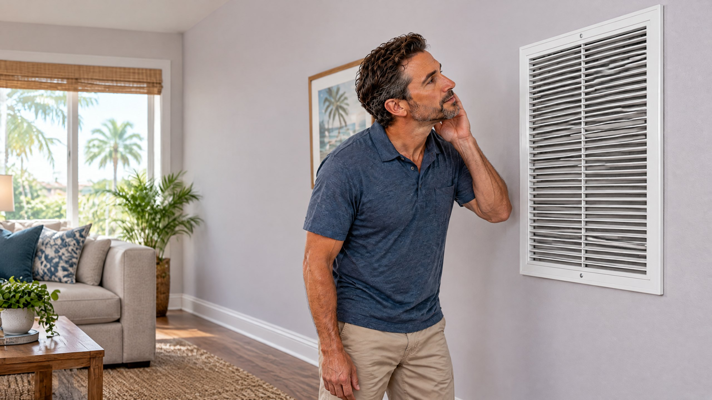

Direct Answer
A whistling AC return vent usually means air is moving through a narrow or restricted opening near the grille, filter, or return path. First identify whether the sound starts with the indoor fan, check the accessible filter for correct fit and buildup, and clear objects blocking the grille. The sound alone does not prove your ducts need replacement; persistent noise calls for measured airflow evaluation.

That high-pitched sound near the hall or living-room grille can be hard to ignore when the AC starts. This article is about a whistle at the indoor return-air opening while the blower is moving air. It is not a guide to every HVAC noise, a claim that one filter type fits all systems, or proof you need new ductwork. The useful first step is to locate exactly where and when the sound begins.
Make Sure You Are Listening at the Return, Not a Supply Vent
A supply register delivers cooled air into a room; a return grille draws room air back toward the indoor equipment. Return grilles are often larger and may hold a filter, but the filter can also be at the air handler. Carrier describes this return-to-filter-to-equipment loop and advises keeping return openings unobstructed.[1] If the noise is at a small supply register instead, the source and next steps may be different. Our separate article explains why closing supply vents to save money is a different question.
Listen from normal room distance as the indoor fan starts. Does the sound come from grille slats, the edge of a filter in that grille, a nearby access-cover gap, or deeper inside the system? Do not remove air-handler panels to investigate. A whistle that appears only while air is moving suggests a different path from a clicking thermostat, a rattling cabinet, or an outdoor fan that will not spin.
What Can Make a Return Grille Whistle?
Fast-moving air passing a narrow opening can create a high-pitched sound. In a technical discussion of return grilles, David Richardson of the National Comfort Institute describes whistle or hum as a possible sign of excessive airspeed at a grille; it is a reason to check airflow and sizing, not a way to diagnose an individual home by sound alone.[4] The restriction may be immediately visible, or it may require a technician to measure the complete return path.
| Observation | Possible explanation | What to check without opening equipment |
|---|---|---|
| Whistle began after a filter change | The filter may be the wrong size, not seated flat, or different from the specified type | Compare the label, dimensions, placement, and the equipment instructions |
| Grille is partly covered | Furniture, curtains, or stored items may limit the return opening | Clear the grille and listen again during a normal cycle |
| Sound changes with interior doors | The return-air pathway may depend on how rooms connect to a central return | Note which doors change the sound; do not modify door or duct openings |
| Whistle continues with a correct, clean filter | Grille, return path, filter cabinet, or blower setup may need evaluation | Request a professional airflow assessment rather than guessing at a part |
Check the Filter and the Grille First
With the system off at the thermostat, inspect only an accessible filter location. Is the filter visibly loaded, the correct size and thickness for the holder, and seated without an obvious gap? Check the model and filter instructions before replacing it; a more restrictive filter is not automatically an upgrade for every system. ENERGY STAR lists inspecting, cleaning, or changing filters as a homeowner maintenance task and identifies proper blower airflow as a professional check.[2] If the filter is bent inward, will not stay in its holder, or the access cover will not seat, report that observation instead of improvising tape or packing around the opening. Our air filter replacement service is an option when you need help selecting or fitting the appropriate filter.
Look at the visible return grille, not inside equipment. Move furniture, rugs, drapes, or storage that blocks it. A normal surface wipe of the grille is different from a repair to its duct connection. Carrier notes that even partial blockage and a loaded filter can reduce return airflow.[1] Do not close or cover a return grille in an attempt to quiet it.
What If the Noise Changes When a Door Closes?
In some houses, a room sends its air back through a central hall return rather than through a dedicated room return. A closed door can change the route air takes back toward the grille. If the sound changes when one door is opened, record that fact for the technician; it is useful context, not permission to cut a door or add a grille. Homes differ, and a technician must consider the room, filter, duct layout, and equipment together before recommending an adjustment.
For Tampa and North Tampa homeowners, repeated cooling cycles may make a previously overlooked grille noise easier to notice. The local climate does not make a whistle uniquely Floridian or prove a humidity fault. Describe the timing—at startup, all through cooling, or only with the fan set to On—so the visit is focused. If the noise is mainly about a fan setting rather than one return grille, see our separate Auto-versus-On thermostat fan guide.
When Does a Persistent Whistle Need a Professional Airflow Check?
Request an AC repair assessment when the sound persists after an appropriate filter and an unobstructed return have been confirmed, or when it comes with weak room airflow, uneven temperatures, a filter that pulls out of place, or cooling that stops. A technician can check the filter cabinet, blower operation, return grille and duct path and measure airflow or pressure as appropriate. ENERGY STAR recommends evaluating supply and return balance, checking damaged or disconnected ducts, and measuring airflow after work is completed.[3]
Sometimes the issue is a loose grille or filter holder; sometimes testing points to a return opening or duct restriction. A whistle alone does not justify new ducts. The separate Learning Center guide to sealing, repairing, or replacing ductwork explains how a measured system-level finding changes the scope of a project. If a confirmed damaged connection needs attention, see On The Way's duct repair service. Do not buy equipment, change blower settings, or approve duct replacement based on a sound recording alone.
What to tell the technician
“The whistle seems to come from [specific return grille]. It starts [when the indoor fan starts / only during cooling / after a filter change]. The filter is [size and condition], and the sound [does or does not] change when a nearby door opens.” These observations help guide testing; they do not establish a diagnosis.
Keep the Focus on the Cause, Not a Quick Guess
On The Way Heating & Air serves Tampa, Lutz, Wesley Chapel, and surrounding North Tampa communities. Owner Dustin Miller began HVAC work with his father in 2006. Ask for an inspection that identifies the actual restriction before approving a grille, filter cabinet, blower, or duct change. Routine AC maintenance can address accessible filters and airflow observations, but a new, recurring, or worsening whistle deserves its own explanation.
Frequently Asked Questions
Why did the return vent start whistling after I changed the filter?
A different filter size, thickness, fit, or airflow resistance may change the sound, but timing alone does not prove the filter is defective. Confirm its specifications and seating against the equipment instructions. If the whistle persists with the correct filter, ask for airflow evaluation.
Can a closed bedroom door make a return grille whistle?
It can change the route air takes toward a central return in some homes. Note whether the whistle changes with the door position, but do not alter doors, vents, or ductwork based on that observation alone.
Does a whistling return grille mean I need new ductwork?
No. A blocked grille, poor filter fit, or local opening problem may be involved. A technician should inspect and measure the return system before recommending a duct repair or replacement.
Is a return vent the same as an AC supply vent?
No. Supply vents blow conditioned air into rooms; return grilles bring room air back to the air handler. If the noise is at a small supply register, describe that location instead because it may have a different explanation.
Sources
- Carrier: What Is a Return Air Vent System and Why Does It Matter?
- ENERGY STAR: Maintenance Checklist
- ENERGY STAR: Hire a Professional Contractor for Duct Improvement Projects
- Contracting Business: Four Return Grille Traits You Should Never Ignore
About the Publisher
On The Way Heating & Air serves Tampa and North Tampa. Owner Dustin Miller began working in HVAC with his father in 2006. This article is general guidance about a return-grille noise, not a diagnosis of any particular home. A technician can identify the cause and discuss the appropriate work after inspection.